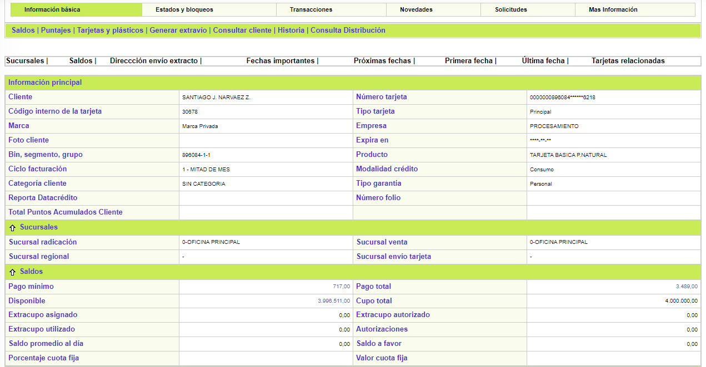
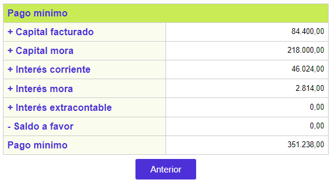
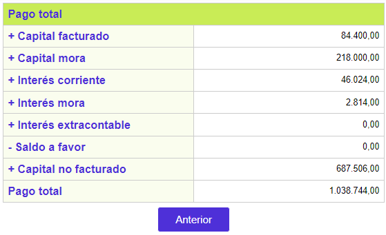
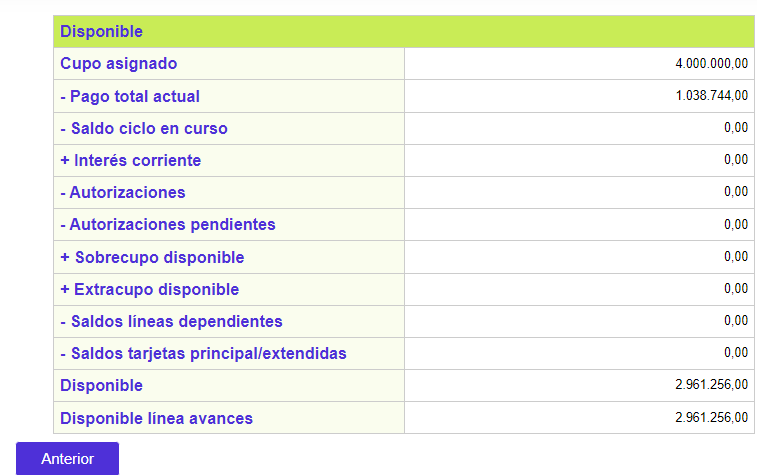

Consulta tarjeta
Desde este formulario se puede consultar toda la información de la tarjeta, relacionada con los diversos valores monetarios, consolidados, o por líneas de crédito o por monedas, desagregados en los múltiples conceptos que los componen, y a través del tiempo mediante los históricos; contiene además detalles sobre los estados, datos personales de ubicación, novedades registradas, comportamiento de puntajes e información sobre las tarjetas que dependen del crédito principal.
Toda la información desplegada es solo de consulta por lo cual ninguno de los formularios del detalle de la tarjeta contiene los enlaces:Adicionar, Actualizar ni Eliminar.
La opción cuenta con varios hipervínculos desde los cuales se invocan los formularios en los cuales el usuario encuentra agrupada la información de la tarjeta que se está consultando: Información básica, Estados y bloqueos, Transacciones, Novedades, Solicitudes y Mas información. Por defecto, cuando se ingresa al formulario de Detalle consulta tarjeta siempre se despliega en el hipervínculo de Información básica

El formulario de Información básica contiene seis hipervínculos que permiten invocar otros formularios que contienen datos de la tarjeta: Saldos, Puntajes, Tarjetas y plásticos, Generar extravío, Consultar cliente e Historia. Adicionalmente, el formulario se encuentra estructurado en 9 bloques de datos para facilitar la consulta de los mismos por parte del usuario: Información principal, Sucursales, Saldos, Localización, Fechas importantes, Próximas fechas, Primera fecha, Ultima fecha y Tarjetas relacionadas.
Descripción de campos
|
Cliente |
Campo que muestra el nombre del cliente titular de la tarjeta. |
Número tarjeta |
Este campo despliega el número de la tarjeta que permite identificar la obligación del cliente. |
Código interno de la tarjeta |
Campo en el cual se indica el código interno de la tarjeta, el cual es único y permite identificar la tarjeta así esta haya presentado cambios de número por ejemplo cuando se hace una reexpedición de la misma. |
Tipo tarjeta |
Este campo señala si la tarjeta es principal, extendida, adicional o amparada lo que le confiere características especiales a la misma. |
Marca |
Campo en el que se muestra la marca a la cual pertenece el bin de la tarjeta. |
Empresa |
Este campo contien el nombre de la entidad que expide la tarjeta y el cual es de utilidad cuando se opera como multiempresa. |
Foto cliente |
Campo que indica si el plástico correspondiente a la tarjeta del cliente tiene o no su foto impresa. |
Expira en |
En este campo se indica en formato YYYY-MM-DD la fecha en la cual vence o expira la tarjeta y debe ser renovada. |
Bin, segmento, grupo |
Campos en los que se muestra la combinatoria del bin, segmento y grupo de afinidad que conforman el producto al cual pertenece la tarjeta consultada. |
Producto |
Este campo despliega el nombre del producto al que pertenece la tarjeta que se está consultando. |
Ciclo facturación |
Campo que contiene el ciclo de facturación asociado con la tarjeta y que determina las fechas de corte de la misma. |
Modalidad de crédito |
Este campo muestra la clasificación del crédito de acuerdo con las políticas de la entidad, la legislación vigente y que puede ser Consumo, Comercial o Microcrédito. |
Categoría cliente |
Campo que indica la categoría a la cual pertenece el cliente titular de la tarjeta y que puede en algún momento determinar algunos privilegios especiales como disminución en las cuotas de manejo, periodos de excención, entre otros. |
Tipo garantía |
Este campo muestra si el tipo de garantía con el cual el cliente está respaldando la obligación contraída es Real o Personal |
Reporta datacrédito |
Campo en el que se señala si la información de la tarjeta debe o no ser reportada a la central de riesgo Datacrédito. |
Sucursal radicación |
Este campo muestra la sucursal de la entidad ante la cual se encuentra radicada a la cual pertenece la obligación. |
Sucursal venta |
Campo que contiene la sucursal de la entidad a la cual se le debe reconocer la gestión por la colocación de la tarjeta, información que puede ser utilizada por la entidad para generar estadísticas, determinar el cumplimiento de metas y el pago de las comisiones o incentivos por colocación de productos. |
Sucursal regional |
En este campo se despliega según corresponda, la sucursal de la entidad con característica de regional a la cual pertenece o se encuentra adscrita la sucursal de radicación de la tarjeta. |
Sucursal envío tarjeta |
Campo en el que se indica si es el caso, la sucursal de la entidad a la cual se envía la tarjeta una vez realzada para que el cliente la reclame y pueda utilizar. |
Pago mínimo |
Este campo muestra el valor del pago mínimo actual de la tarjeta y contiene un hipervínculo mediante el cual se invoca un formulario que despliega el detalle o composición de dicho valor. |
Pago total |
Campo que indica el valor del pago total actual de la tarjeta y que contiene un hipervínculo con el cual se invoca el formulario que muestra el detalle o composición de este valor. |
Disponible |
Este campo señala el valor que se obtiene de la diferencia entre el cupo total asignado a la tarjeta (incluido el extracupo si lo tiene) y el monto de las utilizaciones efectuadas por el cliente. Contiene un hipervínculo a través del cual se invoca el formulario en el cual se muestra el detalle del disponible. |
Cupo total |
Campo en el cual se muestra el valor del cupo total asignado a la línea principal y las líneas independientes de la tarjeta. |
Extracupo asignado |
Este campo indica el valor del extracupo que le ha sido asignado a la tarjeta. |
Extracupo autorizado |
Campo en el que se despliega el valor de las autorizaciones otorgadas sobre el extracupo asignado a la tarjeta y que aún no han sido cruzadas. Una vez que estas son cruzadas, su valor se disminuye y se carga al monto desplegado en el campo Extracupo utilizado. |
Extracupo utilizado |
Este campo contiene el valor acumulado de las utilizaciones hechas sobre el extracupo asignado a la tarjeta y que disminuyen el disponible del mismo. |
Autorizaciones |
Campo que muestra el monto total de las autorizaciones que han sido otorgadas por la entidad a las solicitudes de utilización que se han hecho con la tarjeta y que incluye tanto aquellas que ya fueron cruzadas como las que se encuentran pendientes de cruzar. |
Saldo promedio al día |
Este campo despliega el promedio que el sistema calcula a partir de las utilizaciones hechas con la tarjeta. |
Saldo a favor |
Campo en el que se muestra si es el caso, el valor del saldo a favor del cliente generado por los pagos en exceso efectuados por él. |
Los restantes bloques del formulario contienen los campos que se describen a continuación:

Descripción de campos
Dirección correspondencia |
Campo que despliega la dirección de correspondencia asociada con la tarjeta consultada y a la que se envía según el caso el extracto respectivo. |
Ubicación |
Este campo muestra la ubicación geográfica a la que pertenece la dirección anterior. |
Teléfonos |
Campo en el que se indica los números telefónicos en los cuales es posible contactar al titular de la tarjeta. |
Extensiones |
Este campo muestra según el caso las extensiones asociadas con los números telefónicos anteriores. |
Fax |
Campo que señala el número de fax al cual se le puede enviar información al titular de la tarjeta por este medio. |
Celular |
En este campo se despliega el número de teléfono celular del titular de la tarjeta. |
Zona postal |
Campo que indica la zona postal asociada con la dirección y ubicación del titular de la tarjeta. |
Fecha límite de pago |
Este campo muestra en formato YYYY-MM-DD la fecha límite de pago actual de la tarjeta. |
Próxima facturación |
Campo en formato YYYY-MM-DD que contiene la siguiente fecha en la cual se hará corte y facturación de la tarjeta de acuerdo con el ciclo al que ésta pertenece. |
Fecha apertura |
En este campo se muestra en formato YYYY-MM-DD la fecha en la cual se aprobó la solicitud mediante la cual se le otorgó la tarjeta el cliente. |
Fecha entrega plástico actual |
Campo en formato YYYY-MM-DD que contiene la fecha en la cual se hizo entrega al cliente del último plástico asociado a la tarjeta cuando por ejemplo se han presentado eventos de reposición, reexpedición y otros que implican realzar un nuevo plástico en reemplazo del anterior. |
Cuota afiliación / manejo / seguro |
En este campo se muestra en formato YYYY-MM-DD la fecha en la cual se le efectuará al cliente el cobro por concepto de cuota de afiliación, manejo y seguro de acuerdo con lo parametrizado para el producto. |
Fecha 1a compra normal / especial |
Campos que muestran respectivamente y en formato YYYY-MM-DD la fecha en la cual se hizo la primera compra normal y la primera compra especial con la tarjeta. |
Valor 1a compra normal / especial |
Estos campos contienen respectivamente el valor de la primera compra normal y la primera compra especial efectuadas por el cliente con la tarjeta. |
Fecha 1er avance |
Campo que despliega en formato YYYY-MM-DD la fecha en la cual se hizo la primera transacción de avance con la tarjeta. |
Valor 1er avance |
Este campo indica el valor de la primera transacción de avance efectuada con la tarjeta. |
Fecha 1er pago |
Campo en formato YYYY-MM-DD que señala la fecha en la cual el cliente hizo el primer pago a la entidad por la obligación contraída. |
Valor 1er pago |
En este campo se señala el valor del primer pago efectuado por el titular de la tarjeta a la entidad. |
(última) autorización |
Campo en el que se muestra en formato YYYY-MM-DD la fecha en la que la entidad otorgó la más reciente autorización de una transacción para la tarjeta. |
(último) cambio de ciclo |
Este campo en formato YYYY-MM-DD contiene la fecha en la cual se hizo el más reciente cambio de ciclo de facturación para la tarjeta. |
(último) aumento de cupo |
Campo que despliega la fecha del más reciente aumento de cupo que ha tenido la tarjeta. |
(última) reactivación / reposición / reexpedición / renovación |
En estos campos se muestra respectivamente la fecha en la cual la tarjeta tuvo el mas reciente evento de reactivación, reposición, reexpedición y/o renovación. |
Activación último plástico |
Campo en formato YYYY-MM-DD que contiene la fecha en la que se hizo la activación del último o más reciente plástico entregado al titular de la tarjeta. |
(última) fecha purque exception file |
En este campo se indica la fecha mas reciente en la cual la tarjeta fue retirada del archivo de exception file. |
Número tarjeta depende |
Cuando el tipo de tarjeta es diferente a principal, en este campo se muestra el número de la tarjeta de la cual depende. |
Tarjeta masificadora |
En este campo se despliega el número de tarjeta sobre la cual se van a cobrar las cuotas de afiliación, manejo y seguro, en caso que el cliente tenga más de una tarjeta y la entidad desee efectuar estos cobros sobre una sola de esas tarjetas. |
Tarjeta depende virtual |
Campo que aplica para el caso de las tarjetas virtuales y muestra el número de la tarjeta física de la cual depende. |
Número tarjeta anterior |
Si por algún evento la tarjeta consultada ha tenido algún cambio de número, en este campo se muestra el número que tenía la tarjeta antes del último cambio. |
Número de dependientes |
En el caso de tarjetas principales con extendidas, en este campo se indica la cantidad de tarjetas que dependen directamente de la principal. |
Pago mínimo: si el actor invoca el hipervínculo contenido en el campo pago mínimo, se despliega un formulario con el detalle de dicho pago.

Descripción de campos
Capital facturado |
Este campo indica el monto de las transacciones diferidas que debe ser cubierto mediante el pago mínimo. |
Capital mora |
Campo que señala el monto del capital de facturaciones anteriores que se encuentra actualmente en mora por no haber sido pagado y que debe ser cubierto por el pago mínimo. |
Interés corriente |
En este campo se muestra el valor del interés de financiación que la entidad cobra al cliente por el diferido de las transacciones efectuadas y que debe ser cubierto en el pago mínimo. |
Interés mora |
Campo que contiene el monto de los intereses liquidados por la entidad sobre el capital en mora y debe cancelar mediante el pago mínimo. |
Interés extracontable |
En este campo se indica según corresponda, el monto de los intereses causados después de determinada altura de mora y que deben ser cubiertos con el pago mínimo. |
Saldo a favor |
Campo que despliega en caso de existir, el valor del saldo a favor del cliente y el cual se descontará o aplicará para determinar el pago mínimo. |
Pago mínimo |
En este campo se muestra el valor del pago mínimo resultante de la sumatoria de los campos anteriores y que el cliente debe cancelar dentro de los plazos otorgados por la entidad. |
Pago total: si el actor invoca el hipervínculo contenido en el campo pago total, se despliega un formulario con el detalle de dicho pago.

Descripción de campos
Pago facturado |
Este campo indica el monto de las transacciones diferidas que debe ser cubierto mediante el pago total. |
Capital mora |
Campo que señala el monto del capital de facturaciones anteriores que se encuentra actualmente en mora por no haber sido pagado y que debe ser cubierto por el pago total. |
Interés corriente |
En este campo se muestra el valor del interés de financiación que la entidad cobra al cliente por el diferido de las transacciones efectuadas y que debe ser cubierto en el pago total. |
Interés mora |
Campo que contiene el monto de los intereses liquidados por la entidad sobre el capital en mora y debe cancelar mediante el pago total. |
Interés extracontable |
En este campo se indica según corresponda, el monto de los intereses causados después de determinada altura de mora y que deben ser cubiertos con el pago total. |
Saldo a favor |
Campo que despliega en caso de existir, el valor del saldo a favor del cliente y el cual se descontará o aplicará para determinar el pago total. |
Capital no facturado |
Indica el monto de los saldos diferidos pendientes por cancelar después de efectuar el pago mínimo, los consumos o utilizaciones realizados después de la fecha de la última facturación y los ajustes monetarios que incrementen el saldo tales como reversiones de pagos erróneamente aplicados, etc. que deben ser cubiertos mediante el pago total. |
Pago total |
En este campo se muestra el valor del pago total resultante de la sumatoria de los campos anteriores. |
Disponible: si el actor invoca el hipervínculo contenido en el campo Disponible, se despliega un formulario con el detalle que permite determinar el disponible de la tarjeta.

Descripción de campos
Cupo asignado |
Este campo indica el monto que se asignó como cupo a la línea principal de la tarjeta. |
Pago total actual |
Campo que contiene el valor del pago total actual de la tarjeta. |
Saldo ciclo en curso |
En este campo se muestra el valor de los consumos recientes no facturados, intereses corrientes y de mora hasta la fecha actual. |
Interés corriente |
Campo que contiene el monto de los intereses de financiación liquidados por la entidad sobre los saldos diferidos. |
Autorizaciones |
En este campo se indica el valor de las autorizaciones que la entidad ha otorgado sobre la tarjeta. |
Autorizaciones pendientes |
Campo que despliega en caso de existir, el valor de las autorizaciones que han sido otorgadas en línea y que aún no han sido aplicadas para que afecten el disponible del cliente. |
Sobrecupo disponible |
Indica el monto del sobrecupo autorizado para la tarjeta de acuerdo con lo parametrizado para el producto al que pertenece la misma. |
Extracupo disponible |
Si la tarjeta tiene asignado un extracupo a la fecha, este campo muestra el monto que se encuentra disponible para ser utilizado. |
Saldos líneas dependientes |
En este campo se muestra el valor del saldo actual que la tarjeta tiene por las transacciones y consumos hechos sobre las líneas que dependen de la principal. |
Saldos tarjeta principal / extendidas |
Si la tarjeta consultada es principal y tiene extendidas, en este campo se despliega el monto de los saldos actuales de las tarjetas dependientes y que afectan el disponible de la principal. |
Disponible |
En este campo se muestra el valor del cual dispone la tarjeta para poder afectuar transacciones, y que incluye el de la línea de avances. |
Disponible línea avances |
Campo que muestra el monto disponible que tiene la línea de avances de la tarjeta. |